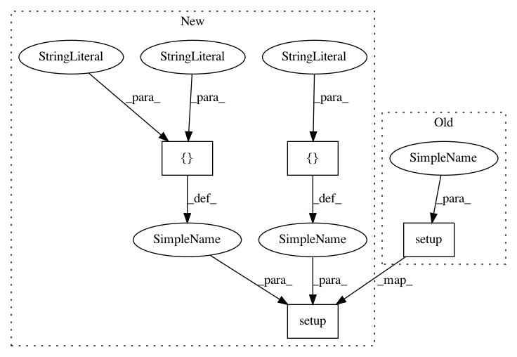

31f78638d5686c887f642e913ddedc64510defcb,setup.py,,,#,5
Before Change
with open(path.join(here, "README.md")) as f:
long_description = f.read()
setup( name = "chemml",
version = cheml.__version__,
author="Mojtaba Haghighatlari, Johannes Hachmann",
author_email="mojtabah@buffalo.edu, hachmann@buffalo.edu",
// url="https://github.com/hachmannlab/chemml",
project_urls={
"Source": "https://github.com/hachmannlab/chemml",
"url": "https://hachmannlab.github.io/chemml/"
},
description="A Machine Learning and Informatics Program Suite for the Chemical and Materials Sciences",
long_description=long_description,
packages = find_packages(exclude=["docs"]),
keywords=["Machine Learning", "Data Mining", "Quantum Chemistry", "Materials Science", "Informatics"],
license="3-Clause BSD",
classifiers=["Development Status :: 4 - Beta",
"Natural Language :: English",
"Programming Language :: Python :: 2.7",
],
python_requires = ">=2.7, <3",
install_requires = ["numpy>=1.13", "pandas>=0.20.3", "tensorflow==1.1.0", "keras==2.1.5",
"scikit-learn==0.19.1", "babel>=2.3.4", "matplotlib>=1.5.1", "deap>=1.2.2",
"lxml","nose","ipywidgets>=7.1","widgetsnbextension>=3.1","graphviz"],
test_suite="nose.collector",
tests_require=["nose"],
include_package_data = True,
// package_data={
// "": ["*.xyz", "*.csv", "*.vasp", "*.txt"],
// // "cheml": ["datasets/data/*", "tests/data/*", "tests/configfiles/*"],
// },
extras_require={
"gui": ["ipywidgets", "graphviz"],
"ml": ["scikit-learn>=0.18.1","tensorflow>=1.4.1", "keras>=2.1.2"],
"viz": ["matplotlib>=1.5.1"],
"ga": ["deap>=1.2.2"],
},
)
After Change
long_description = f.read()
if __name__ == "__main__":
setuptools.setup(
name="chemml",
version=chemml.__version__,
author="Mojtaba Haghighatlari, Johannes Hachmann",
author_email="mojtabah@buffalo.edu, hachmann@buffalo.edu",
// url="https://github.com/hachmannlab/chemml",
project_urls={
"Source": "https://github.com/hachmannlab/chemml",
"url": "https://hachmannlab.github.io/chemml/"
},
description=
"A Machine Learning and Informatics Program Suite for the Chemical and Materials Sciences",
long_description=long_description,
keywords=[
"Machine Learning", "Data Mining", "Quantum Chemistry",
"Materials Science", "Informatics"
],
license="BSD-3C",
packages=setuptools.find_packages(),
scripts=["bin/chemeco"],
// python_requires=">=2.7, <3",
install_requires=[
"future", "six", "numpy", "pandas", "tensorflow==1.1.0",
"keras==2.1.5", "scikit-learn==0.19.1", "babel>=2.3.4",
"matplotlib>=1.5.1", "deap>=1.2.2", "lxml", "graphviz"
],
extras_require={
"docs": [
"sphinx",
"sphinxcontrib-napoleon",
"sphinx_rtd_theme",
"numpydoc",
],
"tests": [
"pytest",
"pytest-cov",
"pytest-pep8",
"tox",
],
},
tests_require=[
"pytest",
"pytest-cov",
"pytest-pep8",
"tox",
],
classifiers=[
"Development Status :: 4 - Beta",
"Natural Language :: English",
"Intended Audience :: Science/Research",
"Programming Language :: Python :: 2.7",
"Programming Language :: Python :: 3.5",
],
zip_safe=False,
)
// install_requires = ["numpy>=1.13", "pandas>=0.20.3", "tensorflow==1.1.0", "keras==2.1.5",
// "scikit-learn==0.19.1", "babel>=2.3.4", "matplotlib>=1.5.1", "deap>=1.2.2",
In pattern: SUPERPATTERN
Frequency: 3
Non-data size: 4
Instances
Project Name: hachmannlab/chemml
Commit Name: 31f78638d5686c887f642e913ddedc64510defcb
Time: 2018-09-18
Author: mojtabah@buffalo.edu
File Name: setup.py
Class Name:
Method Name:
Project Name: josephreisinger/vowpal_porpoise
Commit Name: e3eb9610b5a718268f391c4338617c84b5529765
Time: 2013-08-12
Author: joe@premise.com
File Name: setup.py
Class Name:
Method Name:
Project Name: UFAL-DSG/tgen
Commit Name: 4308ee458228d727ed51a1a838ebc371facb97ba
Time: 2017-08-29
Author: o.dusek@hw.ac.uk
File Name: setup.py
Class Name:
Method Name: